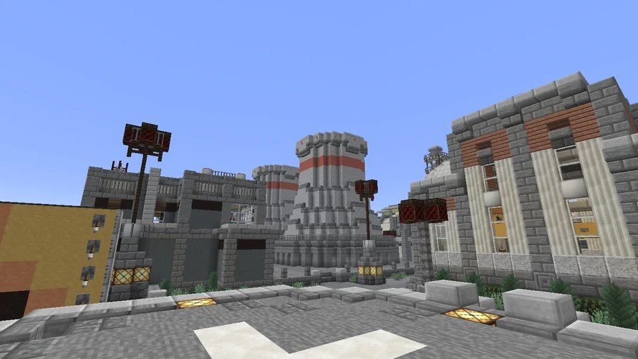
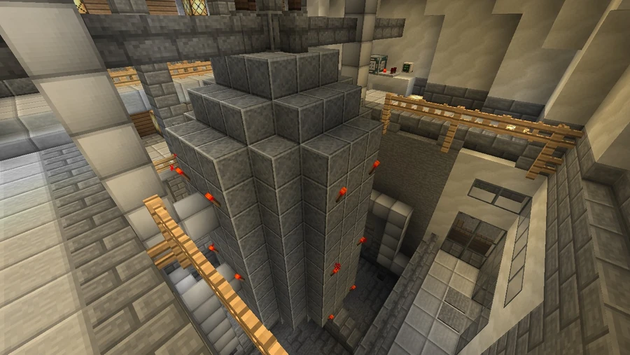
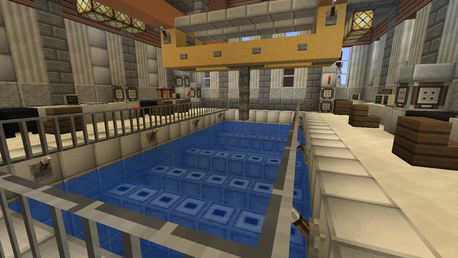

Nuclear Plant
A power plant in the western sector, beside the Coal Mine and River Valley corridor. A workers’ settlement developed alongside its facilities.
Location and power supply
Broville Nuclear Plant stands between Coal Mine and the River Valley corridor, near a cluster of buildings. It appears on the road map and railway diagram and can be reached by the rural commuter railway. The community description credits the plant with 54% of the city’s energy supply and presents it as the region’s most reliable and secure source, an assessment made by that account rather than an independent comparative survey.



Facilities
The complex includes the following components:
- A nuclear reactor core and turbine generator.
- Two cooling towers.
- A fuel pool.
- A nuclear waste processing facility and storage areas.
- A closed-loop water storage system.
- High-voltage transmitters connected to the city grid.
- A station on the rural commuter rail network.
- An office block dedicated to site security management.
The neighboring settlement
The adjacent community is described as consisting almost exclusively of plant workers. Its amenities include The Nucleotide, a diner and bar serving as a neighborhood meeting place. Apple growing is the other major economic activity mentioned. The account credits favorable climatic and agricultural conditions for the successful crop, jokingly adding uranium as another possibility.
Security and incidents
The plant is presented as a high-security facility. The community history states that local protocols thwarted intrusion attempts and mentions two specific incidents:
- An intrusion by five individuals affiliated with a Melonport terrorist network.
- An industrial espionage operation attributed to SOLAR, discovered and dismantled.
The account supplies neither dates nor a more detailed sequence for these incidents.
Gallery






See also
Sources and references
- v11.4.4 maps, signs, books and items World records
- Nuclear Plant · Broville Wiki Community archive
Text adapted and expanded from Nuclear Plant (contributors and history, revision 5103). Adapted text is available under CC BY-SA 3.0.